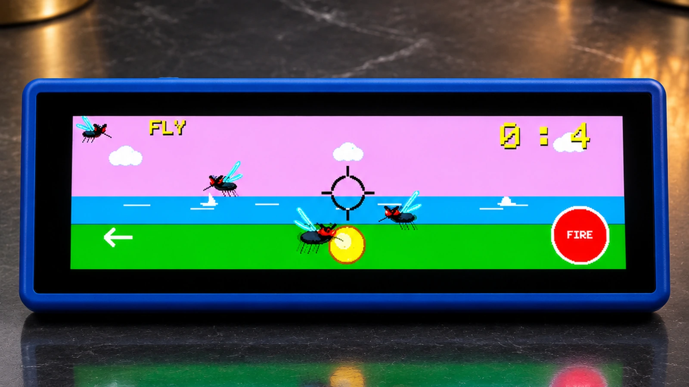
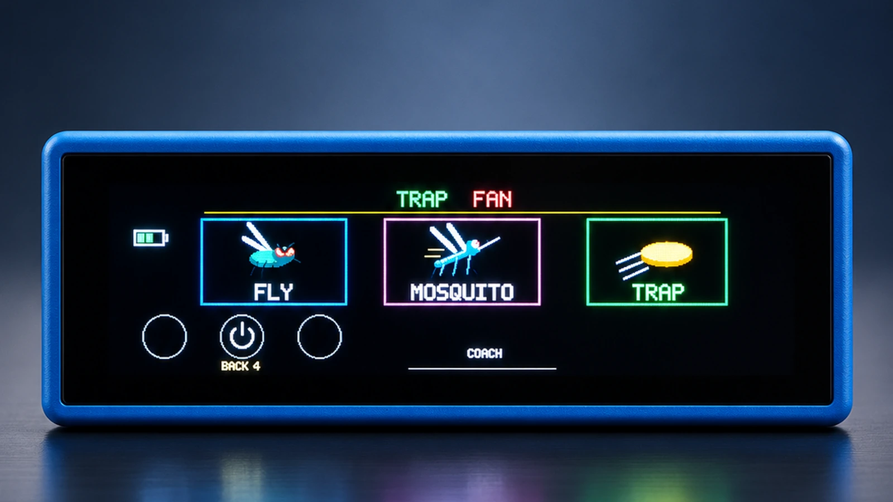
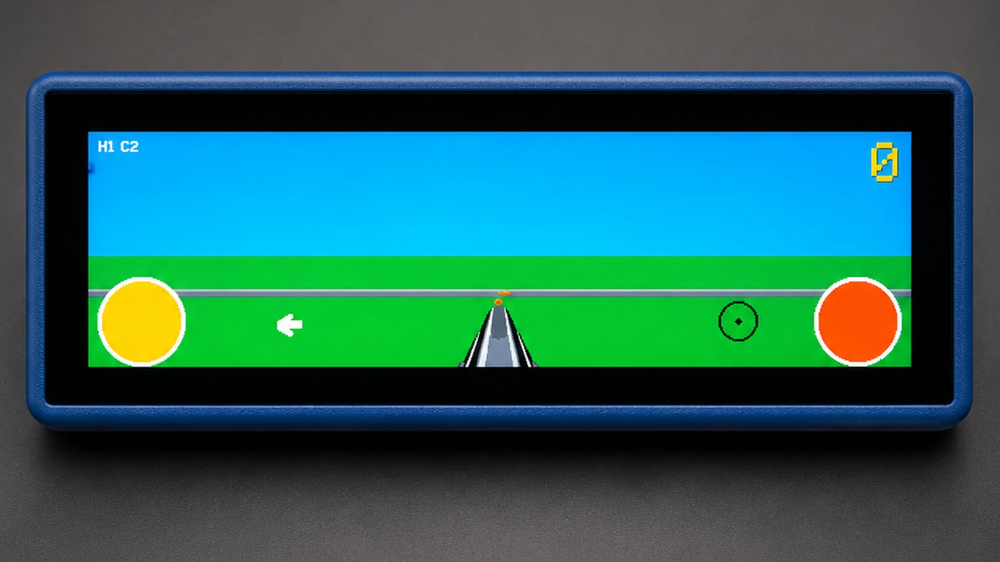

FLY
Play with movement
A playful tracking game with moving flies, a bright landscape and gyroscope aiming.
Illustrative product render; final appearance may vary.
OLYMPIC TRAP GYRO SIMULATOR
A compact gyroscope-controlled shooting simulator built around a dual-core ESP32-S3, touchscreen and six-axis motion sensor. Follow a flying clay, take a virtual shot, and study your movement with TrapFan COACH.
Ready to use · Battery included · Cardboard holder included · Dual-core ESP32-S3

DIY MAKER GUIDE
Make it from 3 mm cardboard. The full-size guide shows the exact ESP opening and simple assembly steps.

Click to enlarge. Detailed BUILD guide →
WHY TrapFan?
Training tools should be accessible. TrapFan explores a small standalone device for simulated Olympic Trap practice without a PC, TV, VR headset or a dedicated room.
01 · SIMULATE
Five stations, 25-target series, trap settings and virtual hits and misses.
02 · MOVE
The onboard gyroscope and accelerometer drive the sightline as you move the device.
03 · ANALYZE
Target and device tracks, reaction timing, shot timing and session records.

FLY
A playful tracking game with moving flies, a bright landscape and gyroscope aiming.
Illustrative product render; final appearance may vary.

MOSQUITO
Quick moving targets and two virtual shots in a simplified shooting mode.
Illustrative product render; final appearance may vary.

TRAP
Five stations, 25 virtual targets and on-device feedback for structured practice.
Illustrative product render; final appearance may vary.
THE HARDWARE
A 3.49-inch IPS touchscreen (640 × 172) and six-axis gyroscope/accelerometer control a complete standalone simulator. TrapFan software comes preinstalled on prepared devices; virtual shots are fired directly on the screen.
TRAP COACH
Compare the clay trajectory with the simulated gun track and timing. The simulator is still experimental; these measurements are not validated against live shooting.
How Coach worksTHE CHALLENGE FOREST
Play first. If you enjoy it, buy a ready-to-play device for a friend, pass along your own, or just share the challenge. Explore the voluntary genealogy of who challenged whom. No purchase or handover is required.
Concept preview with fictional participants. Device checkout opens only after price and payment terms are confirmed.
READY TO USE
TrapFan is supplied as a tested device with installed software, a battery and a cardboard holder. The device price is €99, with shipping additional. Checkout is not yet open.